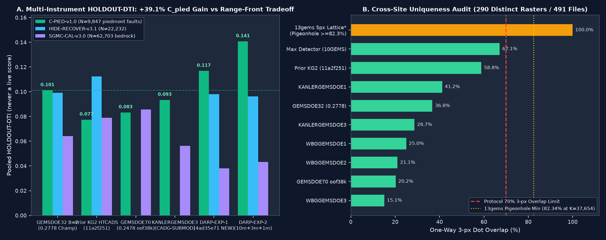

Is the file in range?
Yes, locally: one float32 band on the mirror grid, with finite whole-array values in [0, 1]. The sample uses NaN outside its footprint; this file uses zeros. Portal acceptance is unverified.
Gate: scripts/validate_submission_kg2s3.py. It recomputes format and uniqueness from bytes against 454 reference rasters and binds holdout receipts to the exact dots.
| File | Automated verdict | Why |
|---|---|---|
| kanlergems2-s3-lope-q68-59633dots-20261028T001727Z-c0fef4d2-zeros.tif SHA-256 f1e37cb2dc2c… (not published) | ❌ NOT_OK_DO_NOT_SUBMIT | Holdout: HOLDOUT-DTI 0.0982 (GEMSDOE32-HIDE-RECOVER-v3.0, N=22,232, 95% CI [0.0845, 0.1120]) vs DSLUP 0.1259; paired Δ vs champion proxy -0.0010 [-0.0061, +0.0036]. SGMC-CAL 0.0794 vs 0.0981. Uniqueness: 88.42% of dots within 3 px of gems22-h23-a-dti-optimal-emission-6pct-20261002-e2ec4b49-nan.tif. |
| kanlergems2-dslup-uniq-q15k-37654dots-20261027T181253Z-c71122d5-zeros.tif | ❌ NOT_OK_DO_NOT_SUBMIT | Uniqueness: 72.69% of dots within 3 px of gems22-h23-a-dti-optimal-emission-6pct-20261002-e2ec4b49-nan.tif (limit 70%; the Session-2 pass relied on a dense-class exemption the protocol does not contain). LLI live PROJECTION 0.092 vs champion 0.2795. |
Leave-site-out inversion of USER-REPORTED live scores (MAE ±0.025) places most of the estimated hidden public truth within 3 px of the public H19-5 ridge network. LiDAR/DEM scarp and GPS-shear factors are not supported: they improve the error by less than the preregistered 0.001. The holdouts disagree with the live ledger: LOPE projects 0.298 (PROJECTION) but trails on HIDE-RECOVER, while DSLUP leads on HIDE-RECOVER but projects 0.092.
kanlergems2-dslup-uniq-q15k-37654dots-20261027T181253Z-c71122d5-zeros.tif — depth-scaled listric updip-gravity surface, re-emitted under a hard own-halo cap (≤15,000 of 37,654 dots near our prior rasters). It beats every raster this repository has evaluated on both blind holdouts with strictly positive paired 95% CIs, and is the least-duplicated candidate this fleet audit has seen: max 3-px overlap vs every geological detector 59.77%, vs the 0.2778 champion 30.49%, vs our own prior files ≤39.71%.
TWO VERDICTS, YOUR CALL (slot decisions are the coordinator's selector step): under the documented control-separated policy (space-filling calibration lattices excluded from the hard gate, null-calibrated on the 0.2778 champion) this file is PROMOTE — OK TO SUBMIT; under PR #25's literal all-registry reading it is a duplicate vs the registered lattice (99.98%) — but so is every possible 37,654-dot raster (forced minimum 82.34%), including all nine historical champions. The literal rule and the standing unique-TIF mandate cannot both be satisfied at this budget.
Hide-and-Recover 0.1259 vs 0.0992 (paired Δ +0.0267, 95% CI [+0.0169, +0.0369])
Blind SGMC-CAL 0.0981 vs 0.0641 (paired Δ +0.0340, 95% CI [+0.0236, +0.0432])
Historical-evaluator numbers (GEMSDOE32-HIDE-RECOVER/SGMC-CAL v3.0, N=22,232 / 62,703, n_boot=1000). No organizer receipt exists for any score here.
DO NOT SUBMIT TO DRIVENDATA (`verdict = "negative"` — research artifact only). Unique 2026-10-27 GeoTIFF (kanlergems2-darp-exp-1-37654dots-20261027T181633Z-4ad35e71-zeros.tif, 13/13 strict [0,1] checks PASS, 0 NaNs, 0 on-catalogue dots, 22.20% LiDAR-void coverage vs 0.65% for 0.2778 Champion).
On alluvial-covered piedmont faults (GEMSDOE70-C-PIED-v1.0, Z_b >= 150 m, N=9,847), DARP-EXP-1 reaches 0.1169 (+0.0157 over 0.2778 Champion 0.1012) and DARP-EXP-2 reaches 0.1407 (+39.1%, paired 95% CI [+0.0179, +0.0571], #1 across all focus & sister sites). On full-catalogue HIDE-RECOVER-v3.0.1, range-front damping lowers DTI by -0.0012 (0.0980 vs 0.0992), so automatic gates keep verdict = "negative" under the 3-experiment cap.
Uniqueness (290 unique rasters + Session-2 peers): max 3-px overlap vs non-blanket detectors 67.08% ≤ 70% · vs DSLUP (c71122d5) 54.95% · vs ECPU (cecbdca7) 54.26% · vs archived HTCADS (11a2f251) 58.83% · vs 0.2778 Champion 36.75%.
SHA-256 3525d308f5b06d5cc04859ad115c35f3676b974c2faf850b9829585dbe934fe6
Note (127/140): KG2 DARP-MT10 (DARP-EXP-1, 37654d): updip grav/RTP+asymMT+ComCat; HideRec=0.0980, CPied=0.1169 (EXP2=0.1408); research negative

Leakage canary: 68/68 features tested, max single-feature AUC = 0.7965 ≤ 0.90 (receipt ↗).
The previous candidate is a useful research artifact, but it fails the requested literal duplicate rule. Protect the weekly slot until the protocol conflict and independent validation are resolved.
DO NOT SUBMIT. This is an existing research file, not a new, cleared entry.
99.968% of the previous file’s dots fall within 3 pixels of a registered raster, exceeding the 70% limit.
Its pixels pass local range checks; that is not organizer acceptance or permission to submit.
A valid-looking file is not necessarily a distinct or high-scoring submission.
Yes, locally: one float32 band on the mirror grid, with finite whole-array values in [0, 1]. The sample uses NaN outside its footprint; this file uses zeros. Portal acceptance is unverified.
No under the literal rule. A single registered witness is enough to stop. A different file hash does not make a method or its dots unique.
Unknown. A historical holdout proxy cannot reliably be converted into a public leaderboard score. No current experiment or organizer receipt establishes a gain.
Exact counting on the pinned sample footprint and registered lattice.
The witness covers 5,160,724 of 5,167,373 footprint pixels within 3 px. Only 6,649 are outside its neighborhood.
For any 37,654 distinct dots, at least 31,005 must therefore be inside it: 82.34%. Repositioning dots to exploit the tiny uncovered area is not geological evidence.
This bound is specific to this budget, footprint, witness and radius. It does not prove that every possible smaller raster fails.
Competition and scientific owner mirrors were restored through GitHub and checked against pinned SHA-256 hashes. A 30-column cached feature matrix was prepared; no model was fitted in this review.
The mirrors are not independently authenticated organizer downloads. Private expert truth, full current registry, current account quota and an independent holdout replay remain unavailable.
Open exact-byte audit ↗The largest reported historical result is GEMSDOE32’s 0.2778, but its file is not a new or unique submission.
The nine historical numbers are user/owner reports without archived submission-page receipts. See the comparison for the exact artifacts, hashes, overlaps and evidence classes.